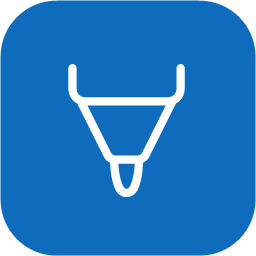
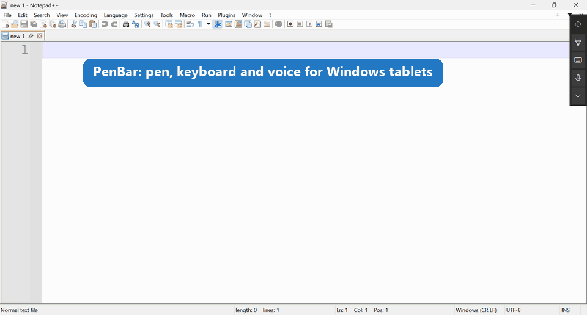

PenBar
A free pen toolbar and handwriting pad for Windows 11 tablets and 2-in-1s.
Version 1.0.0 · single .exe, no installer · free and open source (MIT) ·
or with winget: winget install z1ad.PenBar

Why PenBar?
Undo one word at a time
Handwriting is undone word by word, instead of Ctrl+Z wiping out everything you wrote.
Palm rejection
Rest your hand on the screen. The pad only listens to the pen (and you can switch that off).
No keyboard needed
One tap for Undo, Redo, Copy, Paste, Backspace, Tab, Enter, Last App, Task View and Screenshot.
Stays out of the way
Docks to any screen edge, minimizes when the keyboard is attached, and never steals focus.
Private and offline
Uses Windows' own handwriting recognizer. No account, no cloud, no data leaves your PC.
Free and open source
MIT licensed. Read the code, change it, share it.
Get started
- Download PenBar.exe and put it in a permanent folder.
- Double-click it. If Windows shows “Windows protected your PC”, choose More info → Run anyway (the app isn't code-signed yet).
- Tap Write and start writing. More options are in the tray icon menu.
Made for Windows 11 pen and touch devices. Questions or ideas? Open an issue.